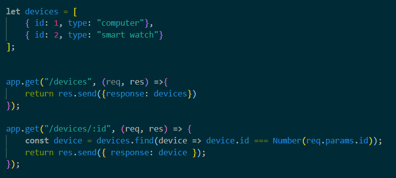

A Restful API is a service where you can request, upload, delete and create data.
It's important to notice, that when you request an object from a database for example, you don't get that exact object,
but a state of the object.
Underneath is a picture from wikipedia, which explains the CRUD you can do via get an post requests.
Furthermore, I would like to demonstrate how to read from a list of objects, which is located in the app.js file
Get all devicesThe two methods, that are being executed are shown underneath. The first gets the full list of devices, while the second method requires an id for a specific device, and returns that.
A good thing to note, is that you can acces the directory of the project like this __dirname
If you wish to peform the update option on a device, you can do it through postman, as shown in the picture

Furthermore, if you wish to delete a device, you can also do that through postman, as shown in the picture